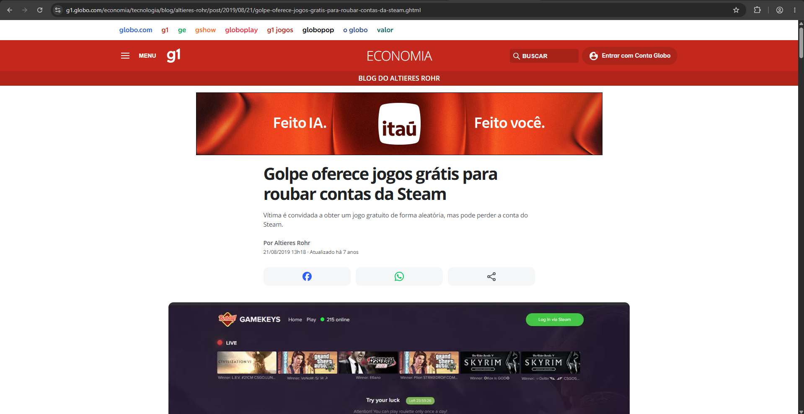

O que são golpes em jogos online?
Hoje em dia, muitas contas de jogos valem dinheiro por causa de skins, itens raros e jogos comprados. Por isso, golpistas criam armadilhas na internet para enganar os jogadores, roubar senhas e assumir o controle dos perfis.
1. Caso Real Investigado (Golpe na Steam)
Para compreender o impacto real desse crime, foi investigada uma reportagem publicada por veículo jornalístico confiável sobre um golpe que enganava jogadores para roubar contas da plataforma Steam:
Detalhes da Reportagem
Título da Notícia: Golpe oferece jogos grátis para roubar contas da Steam
Veículo / Fonte: g1 (Blog do Altieres Rohr)
Data de Publicação: 21/08/2019
Link Original: Acessar matéria completa no g1 ↗

Recorte da matéria original publicada pelo portal g1 em 21/08/2019 (anúncio publicitário removido).
O que aconteceu e prejuízos: De acordo com a reportagem, golpistas criaram um site falso chamado "GameKeys", que prometia sortear jogos pagos gratuitamente (como GTA V e Skyrim) para atrair jogadores da Steam. Ao tentar resgatar o prêmio, a vítima caía em uma tela falsa de login; assim que digitava usuário e senha, os invasores trocavam o e-mail da conta, assumiam o controle do perfil, roubavam itens do inventário e usavam a conta para espalhar o link falso aos amigos.
Investigação e resolução: O ataque foi descoberto e denunciado pelo site especializado Bleeping Computer. A Steam disponibiliza um guia de suporte para que o dono original comprove a propriedade e recupere o acesso à conta, mas alerta que os itens perdidos no inventário não são devolvidos. A reportagem não informa se houve investigação policial ou prisão dos responsáveis.
2. Como o Golpe Acontece: Sinais de Alerta
1º Passo: A Mensagem Isca
Você recebe um link no chat do jogo enviado pela conta de um amigo que já foi hackeado, prometendo jogos ou skins de graça.
2º Passo: Tela Falsa
Ao clicar para resgatar o prêmio, abre uma janela que copia perfeitamente a tela de login da Steam, mas o endereço lá em cima não é o oficial.
3º Passo: Conta Roubada
Assim que você digita seu usuário e senha, os criminosos roubam seus dados, trocam o e-mail da conta e bloqueiam seu acesso.
3. Como se Prevenir (5 Dicas Práticas)
- Ative a verificação em duas etapas (Steam Guard): Mesmo que alguém descubra sua senha, não vai conseguir entrar sem o código do seu celular.
- Olhe sempre o endereço do site (URL): Antes de colocar sua senha, confira se o link lá em cima é realmente o oficial (ex:
steamcommunity.com) e tem o cadeado de segurança. - Desconfie de jogos ou skins de graça: Nenhuma plataforma dá jogos caros através de links estranhos mandados no chat.
- Avise seu amigo por outro aplicativo: Se um amigo mandar links suspeitos no chat do jogo, mande mensagem para ele no WhatsApp ou Discord para avisar que a conta dele pode ter sido invadida.
- Não baixe programas piratas ou cheats: Arquivos de trapaça e jogos piratas costumam esconder vírus que roubam as senhas salvas no seu navegador.
4. Segurança no uso de computadores compartilhados
Quando usamos computadores no laboratório do SENAI, na escola ou em empresas, precisamos tomar cuidado tanto com os nossos dados quanto com a nossa postura física:
Proteção de Dados e Senhas
- Use sua própria conta e nunca salve senhas: Sempre clique em "Nunca" quando o navegador perguntar se deseja salvar sua senha.
- Faça logout de tudo ao sair: Encerre sua sessão no e-mail, redes sociais e sistemas antes de ir embora, fechando todos os arquivos.
- Bloqueie a tela se precisar sair rápido: Vai levantar da cadeira por um minuto? Aperte
Win + Lpara travar a tela. - Não deixe arquivos pessoais na máquina: Não salve trabalhos na Área de Trabalho e não conecte pendrives desconhecidos.
- Não mexa nas configurações de segurança: Nunca desative o antivírus nem tente burlar bloqueios da rede da instituição.
Segurança Física e Ergonomia (NR-17)
- Ajuste cadeira e monitor: Deixe a tela na altura dos olhos, os pés apoiados no chão e os ombros relaxados para não forçar o pescoço.
- Faça pausas e alongue: Evite ficar horas seguidas na mesma posição sem dar uma descansada nos braços e na vista.
- Mantenha água e comida longe: Líquidos perto do teclado ou gabinete podem causar curto-circuito e estragar o equipamento.
- Higiene e organização: Confira se teclado e mouse estão limpos antes de usar e mantenha os cabos organizados para ninguém tropeçar.
Checklist Rápido (Marque o que você já fez)
Marque os itens acima para conferir seu checklist.
5. Teste Prático: Você cairia nesse golpe?
Imagine que você está jogando e recebe essa mensagem no chat de um amigo. O que você faz?
Amigo_Gamer99: Mano olha esse site oficial da Steam dando GTA V e Skyrim de graça hoje!! Resgata rápido antes que acabe: http://steam-gamekeys-gratis.xyz/login
6. Quiz: Teste o que você aprendeu
7. Fontes Consultadas
- Notícia g1: Golpe oferece jogos grátis para roubar contas da Steam
- CERT.br — Cartilha de Segurança para Internet: https://cartilha.cert.br/
- CERT.br — Dicas rápidas (equipamentos compartilhados): https://cartilha.cert.br/dicas-rapidas/
- Ministério do Trabalho — NR-17 (Ergonomia): Página oficial NR-17 (gov.br)